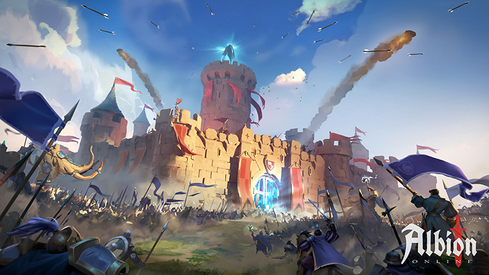
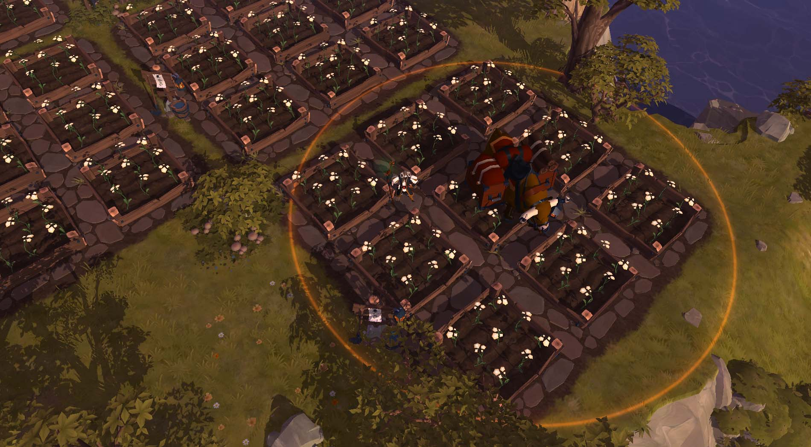

Experience Exciting battles
Step into the world of Albion Online, a free-to-play sandbox MMORPG that puts you in control of your destiny. Forge your path in a vast, open medieval fantasy realm where every item is crafted by players, and your gear defines your abilities. With a classless combat system, you can switch roles by simply changing your equipment, allowing for endless customization to suit your playstyle. Engage in thrilling PvP battles, conquer territories with your guild, or build a peaceful life farming and trading on your private island. Whether you're a solo adventurer or part of a massive alliance, Albion's player-driven economy and dynamic world offer endless opportunities for glory and wealth. Available on PC and mobile, your journey in Albion is just a click away.
Enjoy Small to Large Scale ZvZs
In Albion Online, ZvZ (Zerg vs. Zerg) battles are epic large-scale PvP encounters where guilds clash over territories, castles, and strategic objectives. These intense fights demand coordination, precise shot-calling, and tactical positioning, with game mechanics like AoE escalation and the Smart Cluster Queue ensuring balanced and thrilling combat experiences.


Start Living a Slow Life
Farming life in Albion Online offers a peaceful yet strategic retreat from the game's intense combat, allowing players to cultivate crops like carrots and pumpkins or raise livestock such as chickens and calves on their personal islands. By utilizing focus points to water plants or nurture animals, farmers can increase yields and offspring chances, contributing significantly to the in-game economy through the production of food, potions, and mounts. This agricultural pursuit not only provides a steady income but also plays a crucial role in supporting guild territories and crafting endeavors, making farming a rewarding and integral aspect of Albion's sandbox world